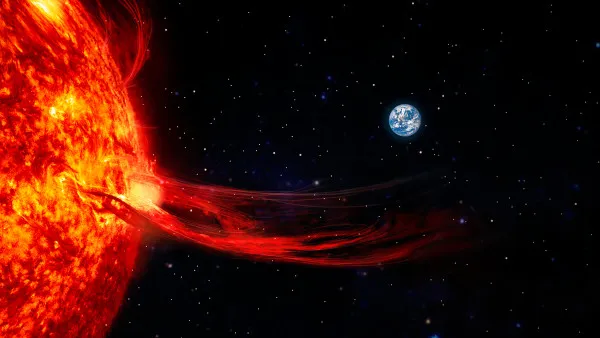

TUDO COMEÇOUNO ESPAÇO.
Uma missão de exploração, uma tempestade solar inesperadae uma equipe separada entre as estrelas. Descubra comocomeçou essa aventura.
UMA EQUIPE,UM DESTINO.
Uma missão especial
Em um futuro distante, uma equipe de gatos astronautas embarcou em uma missão de exploração espacial. O objetivo era descobrir novos planetas, conhecer formas de vida e explorar os mistérios do universo.
Tudo parecia estar funcionando perfeitamente. A equipe estava unida e a nave seguia sua rota pelo espaço, até que um alerta inesperado mudou completamente o destino da expedição.
Expedição espacial
Uma jornada em busca de novos planetas e descobertas pelo universo.
O DIA EM QUETUDO MUDOU.

✦ ✧ ✦Mas o que é uma tempestade solar?
Uma tempestade solar é um fenômeno que acontece quando o Sol libera grandes quantidades de energia e partículas carregadas no espaço.
Essas partículas e alterações no campo magnético podem afetar satélites, sistemas de comunicação, GPS e redes elétricas.
Na história de MEOWLKY WAY, uma tempestade solar muito intensa atingiu a nave da equipe, causando falhas nos sistemas de comunicação e navegação.
PERDIDOS ENTREAS ESTRELAS.
Uma tripulação separada
Com a força da tempestade, a nave perdeu o controle e seus sistemas começaram a falhar. A comunicação foi interrompida e a equipe não conseguiu mais permanecer unida.
Durante o acidente, os integrantes foram separados e acabaram em diferentes regiões do espaço. Cada um foi parar em um planeta desconhecido.
Sem contato com os companheiros e com a nave danificada, agora eles precisam encontrar uma maneira de sobreviver e se reunir novamente.
UMA EQUIPE.MILHARES DE ESTRELAS.
Explore novos planetas, supere desafios e ajude Zeus a encontrar seus cinco colegas. A missão de reunir a tripulação está em suas mãos!
🚀 COMEÇAR A AVENTURA →